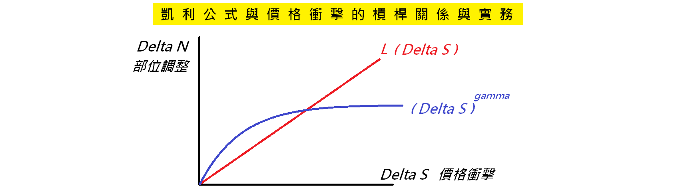
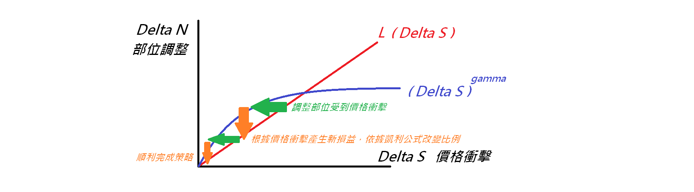

凱利公式與價格衝擊的槓桿關係與實務
Commodity Trading Advisor (CTA) 是一種基金形式，主要專注於期貨和選擇權市場，所以也被稱作是管理期貨基金。CTA 的交易策略的特點，主要可以分成兩類：趨勢交易與反趨勢交易，簡單理解就是找出市場趨勢持續期間跟著趨勢前進、或是找到市場趨勢反轉期間進行反趨勢的交易。
有一種常用於 CTA 策略建構的資金管理技巧，就是「凱利公式」。要活用凱利公式，CTA 的策略基本上就要確定以下幾個特徵：
- 策略執行的預期成功率
- 策略執行的預期失敗率
- 策略成功的預期獲利金額比例
- 策略失敗的預期損失金額比例
為什麼這些特徵在 CTA 策略中比較容易計算，原因是透過期貨與選擇權組合出來的預期損益比較容易計算。例如一個選擇權的價差組合，只要市場價格介在某些特定區間，損益是固定的。在實務上 CTA 策略會遇到一些問題，就是如果手上持有的部位較大，想要根據凱利公式去調整部位，會因為交易標的的價格衝擊（Price Impact）進而產生衝擊成本（Impact Cost），更廣義來說，任何資金管理策略都會產生這個問題。
在操作選擇權的投資組合時，你比較難透過如交易成本分析（Transaction Cost Analysis, TCA）來執行一個讓間接交易成本降到最低的策略，例如VWAP的策略，因為 CTA 實務可能不會真的去持有一個選擇權，而是透過調整持有商品標的和現金的比例來實現選擇權的損益情形，因此為了實現選擇權損益而不斷調整持有商品標的的比例，就無法施行諸如 VWAP 這種有一個固定目標持有量的策略。
所以既然是一個不斷調整商品標的持有比例的投資組合，就該考慮價格衝擊，業界較常使用：
$$\Delta N \rightarrow \left ( \Delta S \right ) ^{\gamma} $$
也就是我們會認為，調整持有商品標的的量 N 會受到商品價格 S 的衝擊且呈現一個次方關係，這個次方 gamma 值會根據不同的金融商品和市場流動性等因素而有所不同，學術研究較長使用 0.5 ，真實情況要根據不同時間和商品標的來估計，這個值可能是負值，例如在外匯市場幾乎不太可能因為較大部位調整，受到匯率波動的極大衝擊，實務在處理這個 gamma 值也可以先調整好量級、單位，再做估算（例如機構投資人以一千張股票作為單位，衡量受到價格、對數價格或報酬率的衝擊，再來估算 gamma）。
然而根據「凱利公式」會發現最佳商品標的持有比例 N 的調整，要依據商品標的價格 S 的變化來決定（其中 L 為槓桿乘數），因為商品價格的變化會直接導致損益，進而影響下一局的投入資金多寡，而這也依賴於 CTA 交易的槓桿倍數：
$$ L \cdot \Delta S \rightarrow \Delta N $$
有了前面兩條公式，我們就可以畫出以下圖形：

若是受到的價格衝擊與調整的部位沒有超出兩線交點，最終部位調整將會收斂到零，達成一個兼顧凱利公式與價格衝擊的 CTA 策略調整，屬於一個正常情況。

反之，若是受到的價格衝擊與調整的部位超出兩線交點，最終部位調整將會無限放大，凱利公式的部位調整會造成投資組合得承受更大的價格衝擊。
因此在假定價格衝擊是一個普遍市場對於每一個 CTA 策略固定存在的影響，要避免承受到無法調整部位的價格衝擊，只能事先先考慮清楚凱利公式的槓桿倍數。 也可以從價格衝擊反推能承受的槓桿倍數，可以設定一個槓桿倍數的極限、或是倍數衰減，雖然無法完全按照凱利公式，但結果仍然會不錯且避免受到過大的價格衝擊。